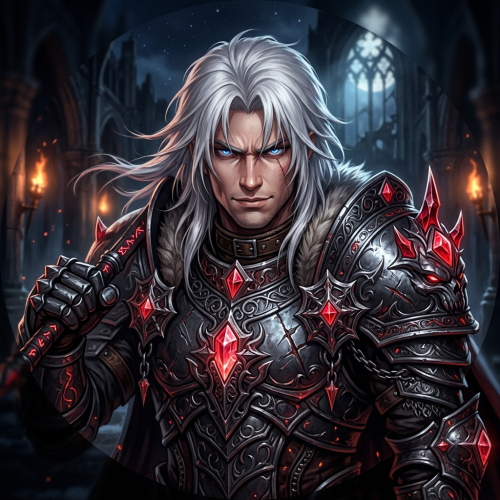
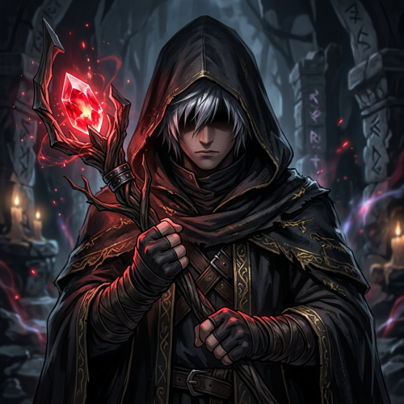
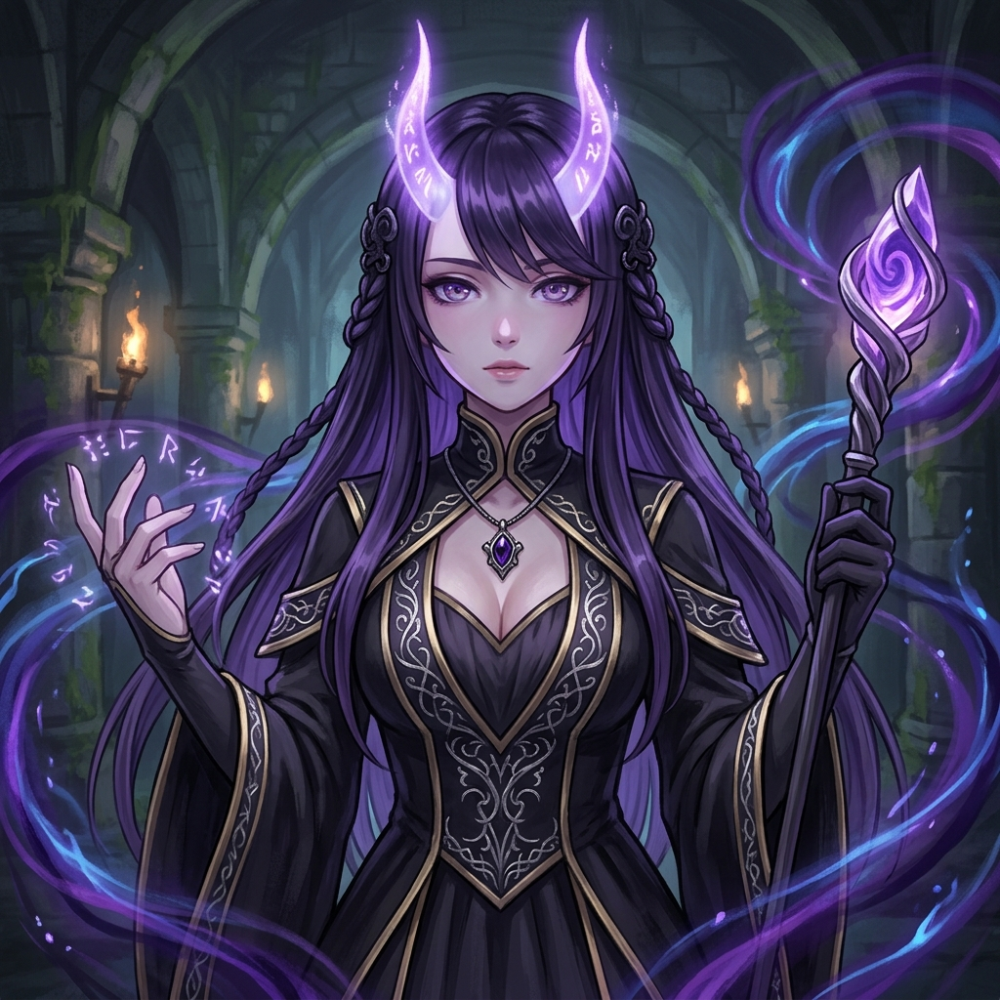

El Equipo de Obsidian RO
Obsidian RO es un proyecto impulsado por jugadores apasionados por Ragnarok Online. Nuestro objetivo es ofrecer una experiencia estable, desafiante y en constante evolución para toda la comunidad.

Administración
Gestión general del proyecto y planificación de contenido.

Soporte
Asistencia a jugadores y resolución de incidencias.

Comunidad
Organización de eventos y actividades dentro del juego.